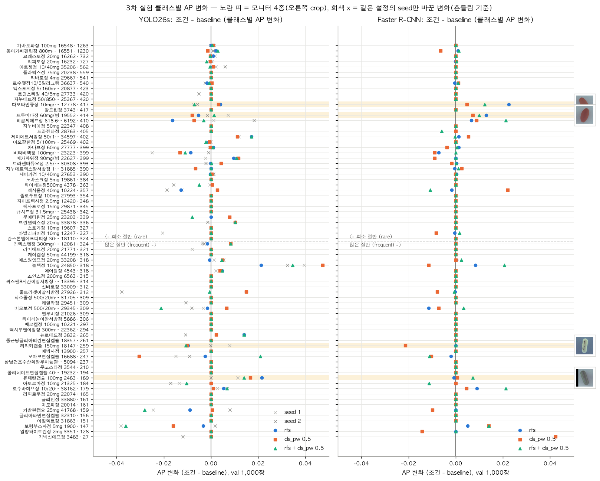

1 / 0
부록
부록: 3차 클래스별 AP 변화는 seed만 바꾼 변화와 같은 범위입니다

| 모델 · 조건 | 뮤테란 2483 | 다보타민큐 12778 | 리리카 18147 | 트루비타 19552 |
|---|---|---|---|---|
| YOLO baseline | 0.971 / 0.855 | 0.976 / 0.881 | 0.974 / 0.871 | 0.959 / 0.793 |
| YOLO rfs | 0.993 / 0.963 | 0.980 / 0.902 | 0.965 / 0.823 | 0.953 / 0.766 |
| YOLO cls_pw 0.5 | 0.988 / 0.938 | 0.979 / 0.897 | 0.964 / 0.821 | 0.951 / 0.753 |
| YOLO 둘 다 | 0.985 / 0.925 | 0.969 / 0.846 | 0.964 / 0.818 | 0.960 / 0.799 |
| F-RCNN baseline | 0.993 / 0.963 | 0.971 / 0.855 | 1.000 / 1.000 | 0.971 / 0.856 |
| F-RCNN rfs | 0.992 / 0.960 | 0.994 / 0.968 | 1.000 / 1.000 | 0.984 / 0.921 |
| F-RCNN cls_pw 0.5 | 0.993 / 0.967 | 0.976 / 0.879 | 0.979 / 0.894 | 0.979 / 0.893 |
| F-RCNN 둘 다 | 1.000 / 1.000 | 0.983 / 0.917 | 1.000 / 1.000 | 0.981 / 0.906 |
AP@[0.75:0.95] / AP@0.95. 모니터 4종은 train 189~417개로 희소하지 않은데도 AP@0.95가 낮습니다.
← →/Space 이동 · N 노트 · Esc 목차